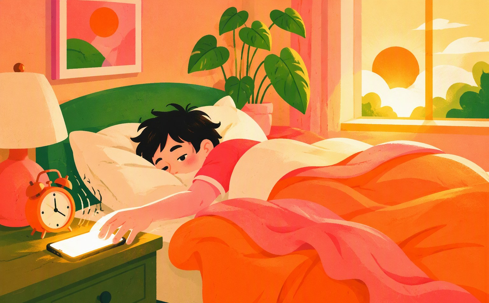
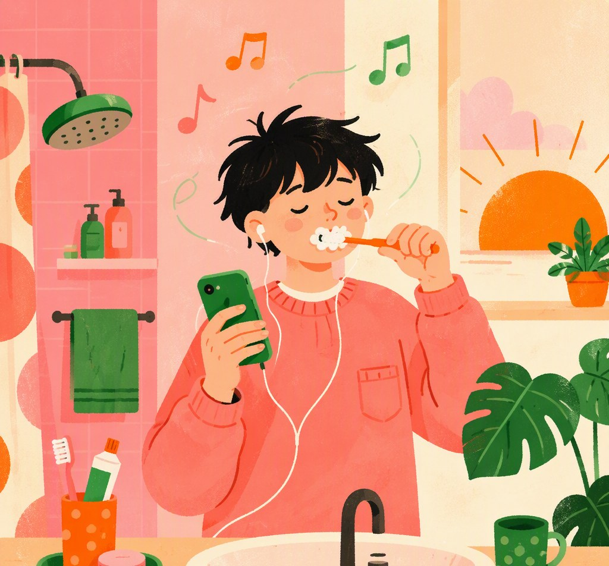
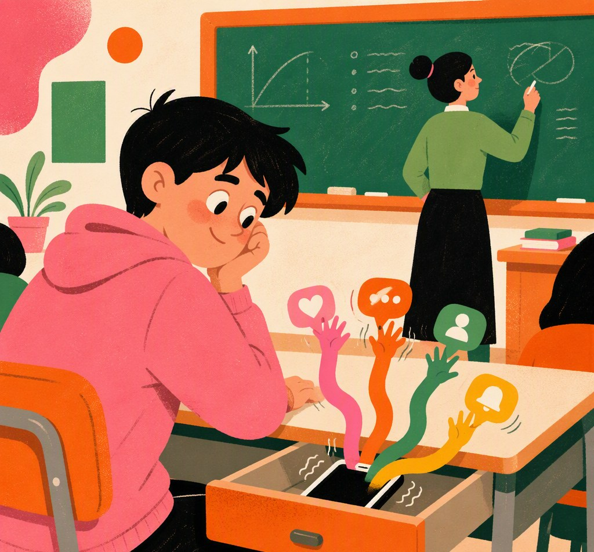
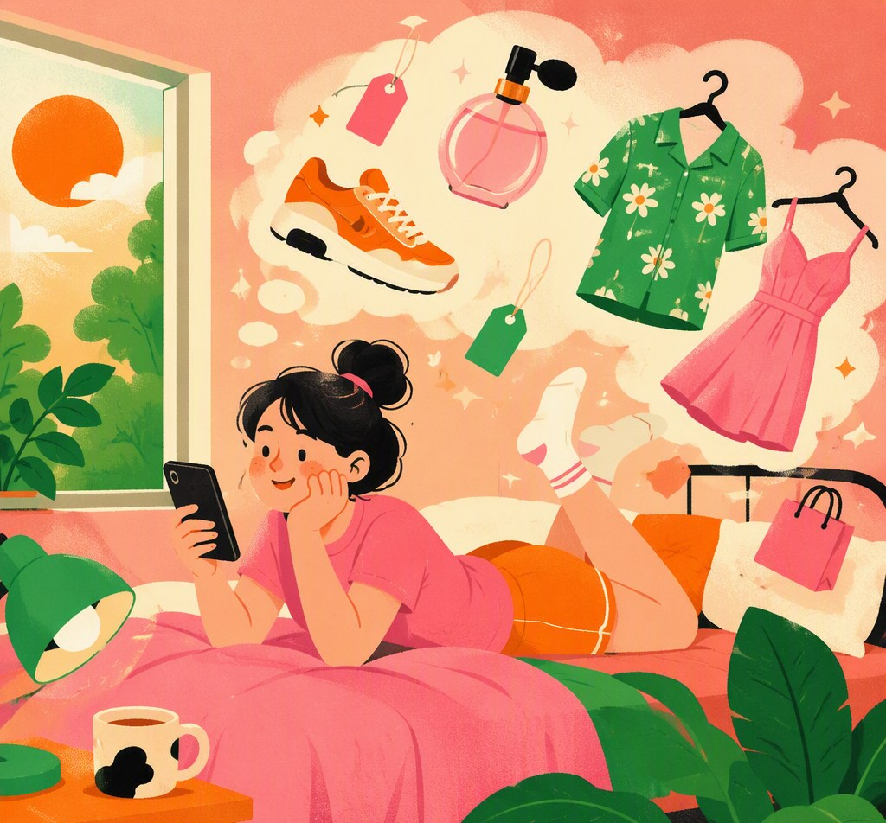
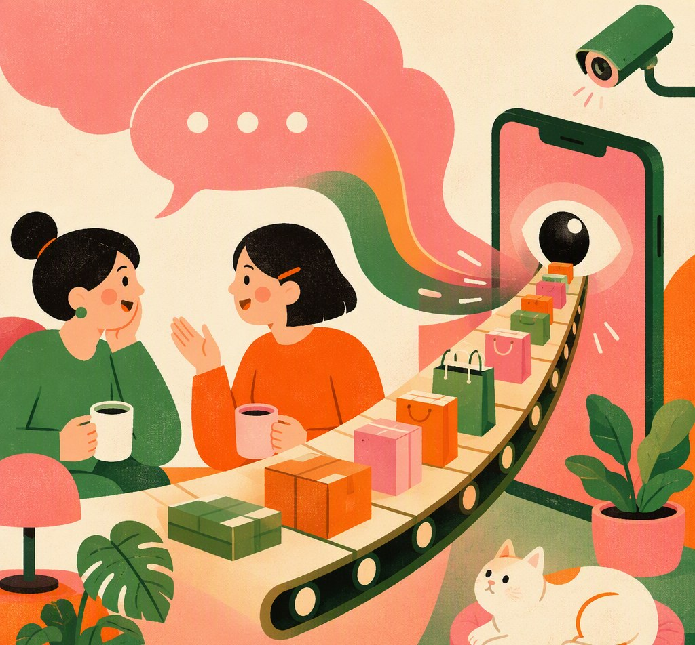
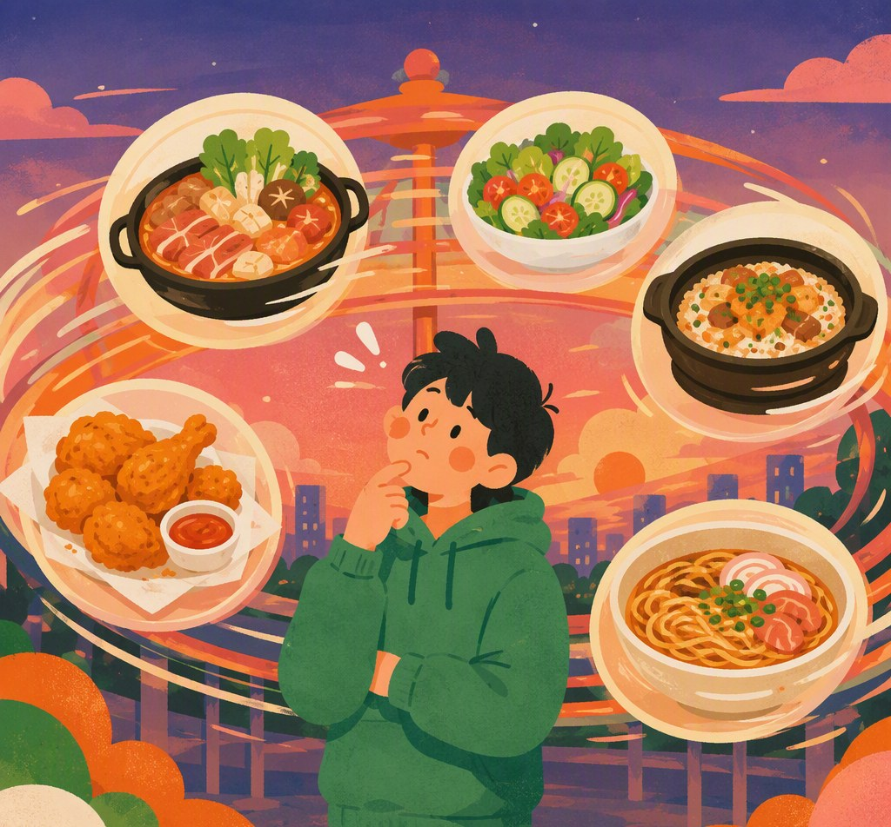
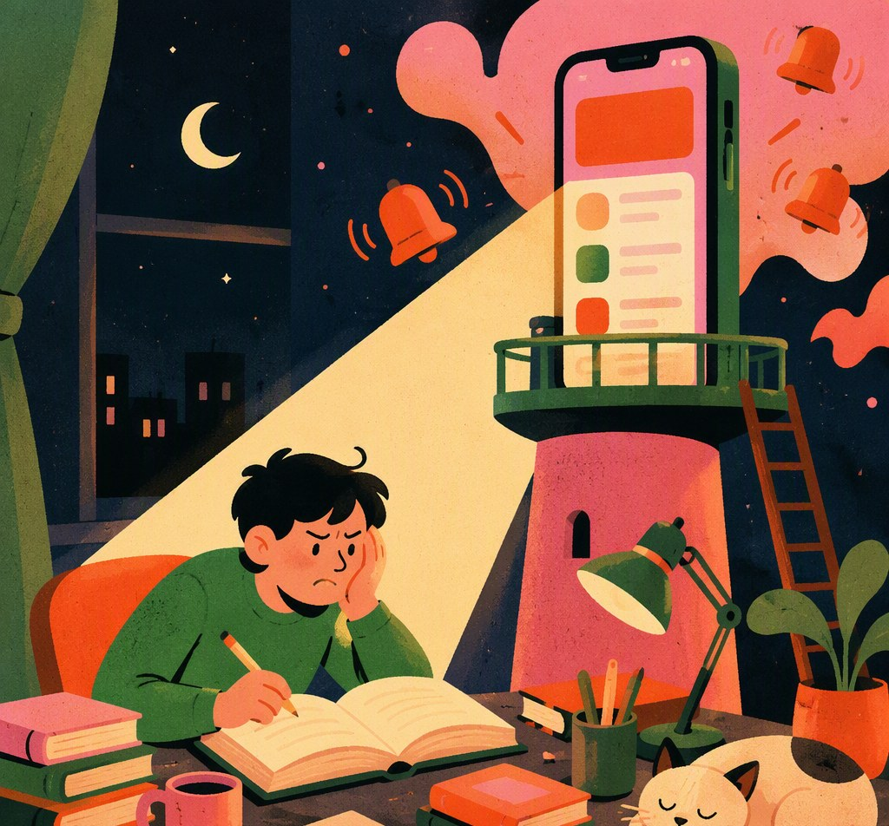
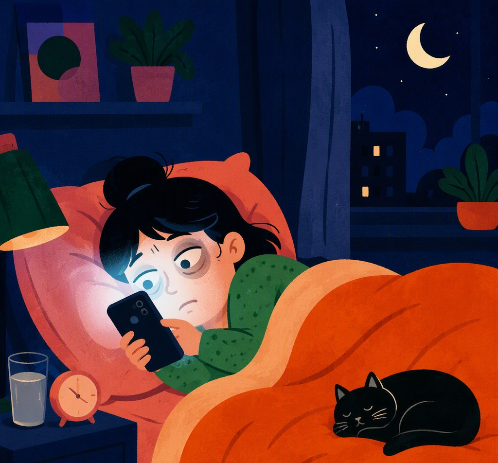

记完这一天我才明白，最厉害的控制不是拿走你的选择，而是让你对给你的选择感激不尽。
人创造环境，同样环境也创造人。人原本一边活着一边改造世界，可是在算法时代，我们被世界改造的速度，远快过改造它的速度。
我原以为我在自由地过日子，其实只是在一套提前写好的选项里，热情地点击。

闹钟响了三遍，我眯着眼睛摸到手机，音乐App的日推已经候在那里了。
巧了，正是我最近循环的那种调调。我一边刷牙一边想：它怎么知道？然后反应过来——它知道，是因为我过去的每一次播放、每一次切歌、每一次深夜单曲循环，都喂给了它。
不是意识决定生活，而是生活决定意识。不是今天的我想听歌，是昨天的我用数据写好了今天的我的品味。
有些需求是我们真实需要的，有些需求是系统制造出来再喂给我们的“虚假需求”。我想听这首歌的感觉无比真实，但这份“真实”真的是真实的吗？

第二节课，老师讲到重点，手机在桌肚里轻轻一震。
本来只想瞟一眼，结果小红书推了我收藏过的同款穿搭，知乎推了我感兴趣的“中国人民大学的衰落是不可逆的吗”，抖音推了昨晚刷到一半的系列，淘宝还补了一刀，“你关注的商品降价了”。
四路大军同时抵达，我的大脑非常诚实——课，听不进去了。
单向度的人不是被禁止思考的人，而是丧失思考维度的人。虽然没有一个App逼我点开，但它们合力让我“只能”点开，我无法拒绝它们的邀请。
我损失的其实不是那十分钟，而是“把注意力放在一件事上”这个能力本身。

中午躺床上刷淘宝，根本没打算买任何东西，但还是忍不住逛了起来。点进去，全是我上周偷偷搜过的东西。
最诡异的是其中一双鞋。我发誓只是点进去看了三秒，觉得太贵就划走了。可它现在还挂在那里，等我。
马克思讲异化时说，人创造的东西反过来支配人本身。
我的浏览记录明明是我一条一条点出来的，可当它以“猜你喜欢”的面目站到我面前时，我居然觉得陌生：
这人品味挺杂啊……等等，这人是我。原来我已经分裂成两个人：一个正在刷手机的我，和一个被存进数据库、24小时在线替我做决定的我。

中午我只是在微信上和室友随口说了一句“最近想买一瓶香水”，下午打开淘宝，首页第一屏就是它。
马克思分析商品拜物教时说，人与人的关系会神秘地变成物与物的关系。我和室友的私人对话，被拆解成关键词，在看不见的系统里和商品库面面相觑。
我以为权力是个具体的人，在某个机房里盯着我。其实它早就不是了，弥散在整个系统的网络里，自动运转，无孔不入。
没有监听员，没有反派，只有一条安静流淌的数据管道。
而我每天睁开眼做的第一件事，就是亲手为这条管道投喂数据。

傍晚，外卖App准时推送，附近5家新店，猜你喜欢。
我点开，滑动，点开，滑动。麻辣烫、轻食、煲仔饭、炸鸡……半小时后，我更加不知道吃什么了。
我们拥有的选择前所未有的多，我们却前所未有的不自由。因为所有选项都在同一个框架里转圈。而真正的问题，我为什么非要通过外卖解决晚饭，却从来没有被我思考过。

晚上九点，我下定决心，今晚不刷手机，看一小时书。
书摊开，手机倒扣在桌上。十分钟里，它震了四次：群消息、App推送、快递到了、有人@我。我一次次伸手把它翻过来，又一次次强迫自己扣回去。看书的这一个小时，我有一半时间在跟自己谈判。
福柯讲规训社会，最经典的意象是全景敞视监狱。一座高塔，让人时刻感觉可能正被看着，于是自己管好自己。而我的书桌上没有高塔，我随身携带的这部手机就是瞭望塔——它不一定真的在看我，但只要它随时可能响，我就永远坐不端正。
我的闲暇并没有真正来到我身边。我躺在床上点赞、停留的每一秒，都在为某个后台生产数据。下课之后，我仍然在一台更大的机器上，做一份没有工资的工作。

我对着屏幕说“刷完这条就睡”——说这话的时候，推荐算法可能正在笑。因为最后一条是它定义的，而下一条永远比这一条更符合我的口味。
一小时后我放下手机，眼睛酸，心里空。这一小时，我没生产任何东西，没记住任何东西，没和任何人说话。我的时间没有消失，它只是不再属于我，成了别人后台报表里一个增长的数字。
不是谁强迫我劳动，是我心甘情愿地，把自己一天的最后一块完整时间，主动上交了。

记完这一天我才明白，最厉害的控制不是拿走你的选择，而是让你对给你的选择感激不尽。
人创造环境，同样环境也创造人。人原本一边活着一边改造世界，可是在算法时代，我们被世界改造的速度，远快过改造它的速度。